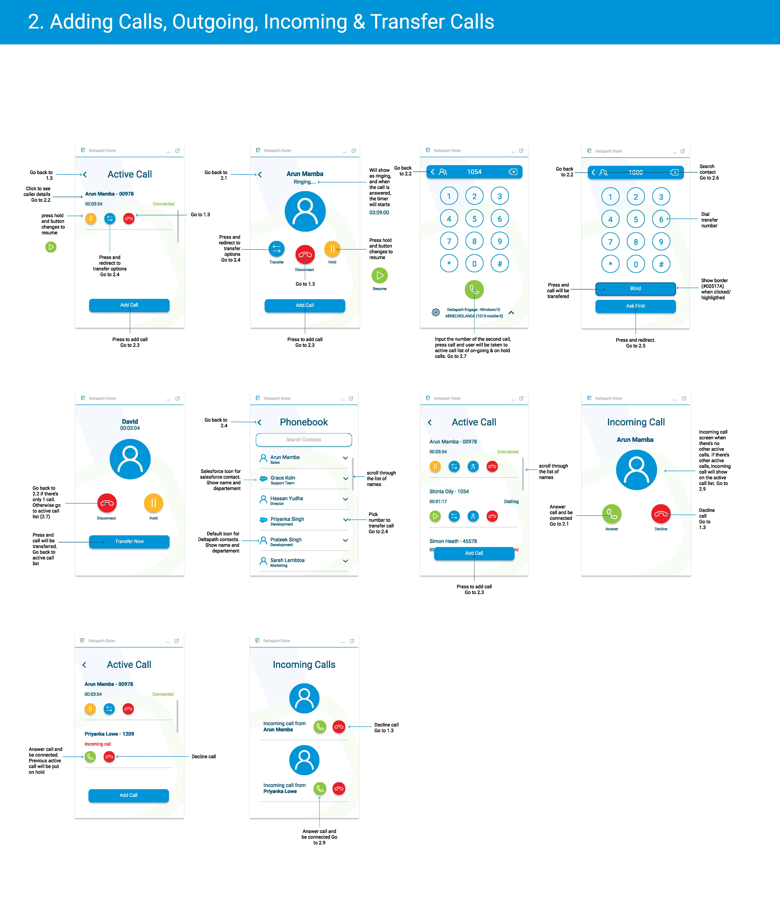
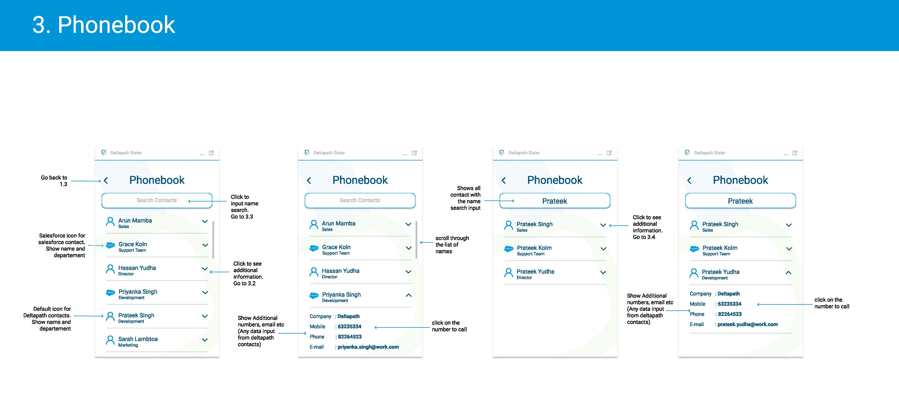
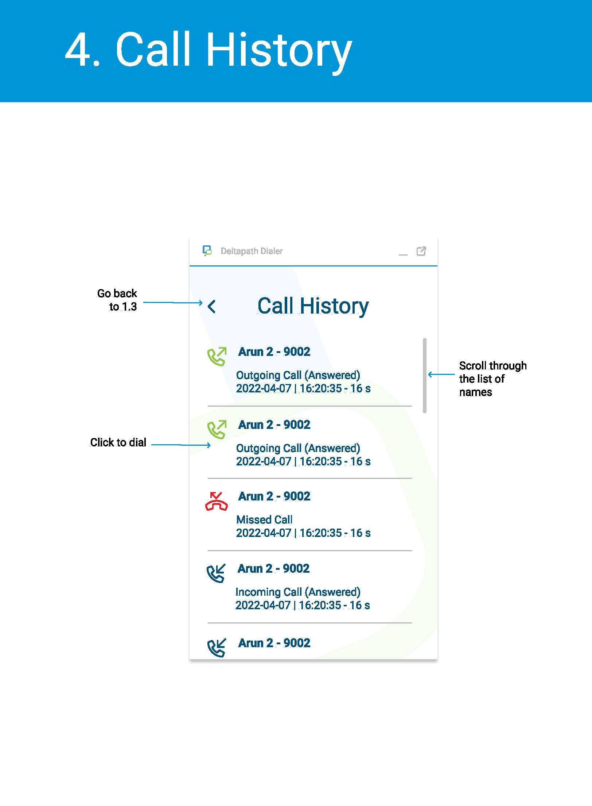
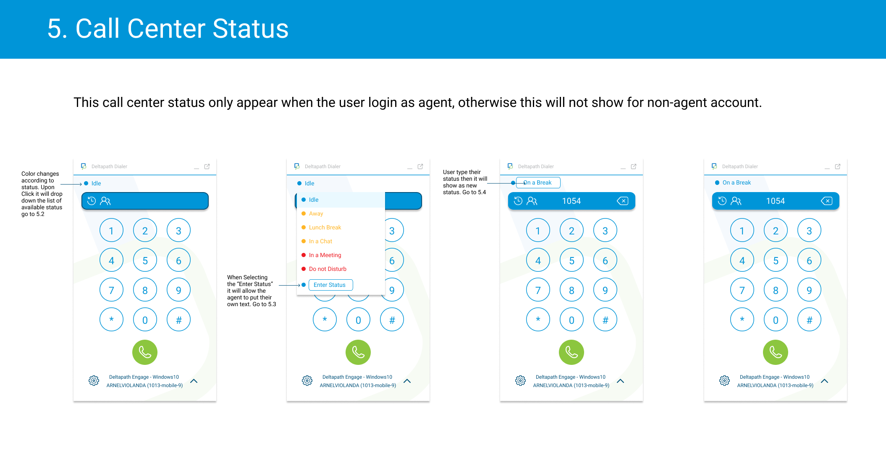

Deltapath Salesforce CTI Integration
Initiate calls from your Salesforce on any device you have the application installed and start enjoying
audio or video calls from anywhere. Enjoy Salesforce computer telephony integration (CTI).
Outgoing calls launch the Deltapath Engage or Deltapath Mobile productivity application. Download
Deltapath Engage on Windows or macOS or download Deltapath Mobile on iOS or Android.
Expertise
UX & UI Design
Year
2022


Techonogies:


Problem:
Before the introduction of Open CTI (Computer Telephony Integration), Salesforce users could only use the
features of a CTI system after they installed a CTI adapter program on their machines. These types of
programs often included desktop software that required maintenance and didn’t offer the benefits of cloud
architecture. After the Open CTI implementation was introduced, it’s now integrated with Salesforce using
the Salesforce Call Center.
My task in this project is to create the user interface and user experience of the Open CTI implementations.
Process:
When rolling out all the screens, careful attention was paid so that the colour hierarchies were respected.
White space was used generously to keep the layouts uncluttered and to balance out the vibrancy of the icon
colours. Using strong and simple geometry and confident typography, we created a quick and effective UI that
looks good with the brand guidelines. We used circular forms to create a more welcoming look for the
application.
The working process can be summarized to:
-
Work with the product design manager on the software requirements
-
Learn more about what is needed from Salesforce agents and identify their pain points
-
While I was researching, I also started working on re-designs for specific parts of the calling experience, including selecting transfer options.
Results:
The project is still in the development stage, but so far we have gathered good feedback from our prospective users, they like the bright colour and the simplistic UI.



